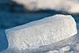

ice
matter

Source: Wikipedia
Wikipedia Page (Something wrong with this association? Let us know.)
Wikidata Page (Something wrong with this association? Let us know.)
Occurs in:
- snow-or-ice__melt_factor
- atmosphere_ice__mass-per-volume_density
- atmosphere_ice_precipitation__duration
- atmosphere_ice_precipitation__volume_flux
- glacier_bottom_ice__magnitude_of_shear_stress
- glacier_bottom_ice_sliding__speed
- glacier_bottom_ice__static_pressure
- glacier_bottom_ice__temperature
- glacier_bottom_ice_flowing__east_component_of_velocity
- glacier_bottom_ice_flowing__east_down_component_of_stress
- glacier_bottom_ice_flowing__north_component_of_velocity
- glacier_bottom_ice_flowing__north_down_component_of_stress
- glacier_bottom_ice_flowing__x_component_of_velocity
- glacier_bottom_ice_flowing__x_z_component_of_stress
- glacier_bottom_ice_flowing__y_component_of_velocity
- glacier_bottom_ice_flowing__y_z_component_of_stress
- glacier_bottom_ice_flowing__z_component_of_velocity
- glacier_ice_ablation__length-per-time_rate
- glacier_ice_accumulation__length-per-time_rate
- glacier_ice__azimuth_angle_of_gradient_of_temperature
- glacier_ice__change_from_one-year_min_of_mass
- glacier_ice__change_from_one-year_min_of_thickness
- glacier_ice__change_from_one-year_min_of_volume
- glacier_ice~melting-point__depression_of_temperature
- glacier_ice_meltwater__domain_time_integral_of_volume_flux
- glacier_ice__down_derivative_of_temperature
- glacier_ice__shear_dynamic_viscosity
- glacier_ice__volume_dynamic_viscosity
- glacier_ice__east_derivative_of_temperature
- glacier_ice__elevation_angle_of_gradient_of_temperature
- glacier_ice__glen-law_coefficient
- glacier_ice__glen-law_exponent
- glacier_ice__heat_capacity_ratio
- glacier_ice__initial_thickness
- glacier_ice_isentropic-process__compressibility
- glacier_ice_isothermal-process__compressibility
- glacier_ice__shear_kinematic_viscosity
- glacier_ice__volume_kinematic_viscosity
- glacier_ice__magnitude_of_gradient_of_temperature
- glacier_ice__mass
- glacier_ice__mass-per-volume_density
- glacier_ice_isobaric-process__mass-specific_heat_capacity
- glacier_ice_isochoric-process__mass-specific_heat_capacity
- glacier_ice_fusion__mass-specific_latent_heat
- glacier_ice_sublimation__mass-specific_latent_heat
- glacier_ice_vaporization__mass-specific_latent_heat
- glacier_ice_meltwater__mass_flux
- glacier_ice_meltwater__volume_flux
- glacier_ice~melting-point__temperature
- glacier_ice__north_derivative_of_temperature
- glacier_ice__peclet_number
- glacier_ice~melting-point_at-air_pressure__temperature
- glacier_ice__relative_permittivity
- glacier_ice__temperature
- glacier_ice__thermal_conductivity
- glacier_ice__thermal_diffusivity
- glacier_ice__thermal_inertia
- glacier_ice__thermal_resistivity
- glacier_ice__thermal_volume_expansion_coefficient
- glacier_ice__thickness
- glacier_ice__time_derivative_of_mass
- glacier_ice__time_derivative_of_thickness
- glacier_ice__time_derivative_of_volume
- glacier_ice__volume
- glacier_ice_isobaric-process__volume-specific_heat_capacity
- glacier_ice_isochoric-process__volume-specific_heat_capacity
- glacier_ice__volume-vs-area-law_coefficient
- glacier_ice__volume-vs-area-law_exponent
- glacier_ice__x_derivative_of_temperature
- glacier_ice__y_derivative_of_temperature
- glacier_ice__z_derivative_of_temperature
- glacier_ice_flowing__azimuth_angle_of_gradient_of_static_pressure
- glacier_ice_flowing__azimuth_angle_of_velocity
- glacier_ice_flowing__down_component_of_velocity
- glacier_ice_flowing__down_derivative_of_static_pressure
- glacier_ice_flowing__dynamic_pressure
- glacier_ice_flowing__east_component_of_velocity
- glacier_ice_flowing__east_derivative_of_static_pressure
- glacier_ice_flowing__elevation_angle_of_gradient_of_static_pressure
- glacier_ice_flowing__elevation_angle_of_velocity
- glacier_ice_flowing__magnitude_of_gradient_of_static_pressure
- glacier_ice_flowing__north_component_of_velocity
- glacier_ice_flowing__north_derivative_of_static_pressure
- glacier_ice_flowing__south_component_of_velocity
- glacier_ice_flowing__speed
- glacier_ice_flowing__total_pressure
- glacier_ice_flowing__up_component_of_velocity
- glacier_ice_flowing__west_component_of_velocity
- glacier_ice_flowing__x_component_of_velocity
- glacier_ice_flowing__x_derivative_of_static_pressure
- glacier_ice_flowing__y_component_of_velocity
- glacier_ice_flowing__y_derivative_of_static_pressure
- glacier_ice_flowing__z_component_of_velocity
- glacier_ice_flowing__z_derivative_of_static_pressure
- glacier_ice_meltwater__domain_time_integral_of_volume_flux
- glacier_ice_meltwater__mass_flux
- glacier_ice_meltwater__volume_flux
- glacier_ice_above-bed__distance
- glacier_ice_above-bed__normalized_distance
- glacier_top_ice_desublimation__mass_flux
- glacier_top_ice_desublimation__volume_flux
- glacier_top_ice_sublimation__mass_flux
- glacier_top_ice_sublimation__volume_flux
- glacier_top_ice__temperature
- glacier_top_ice__time_derivative_of_temperature
- glacier_top_ice_flowing__x_component_of_velocity
- glacier_top_ice_flowing__y_component_of_velocity
- glacier_top_ice__time_max_of_net_heat_energy_flux
- glacier_top_ice_wind_scour__length-per-time_rate
- ice_isobaric-process__mass-specific_heat_capacity
- ice_isochoric-process__mass-specific_heat_capacity
- ice~melting-point__temperature
- ice_isobaric-process__volume-specific_heat_capacity
- ice_isochoric-process__volume-specific_heat_capacity
- sea_ice__age
- sea_ice__albedo
- sea_ice__area
- sea_ice__area_fraction
- sea_ice~melting-point__depression_of_temperature
- sea_ice__draft_depth
- sea_ice__shear_dynamic_viscosity
- sea_ice__volume_dynamic_viscosity
- sea_ice__emissivity
- sea_ice__extent
- sea_ice__freeboard_height
- sea_ice__heat_capacity_ratio
- sea_ice_isentropic-process__compressibility
- sea_ice_isothermal-process__compressibility
- sea_ice__shear_kinematic_viscosity
- sea_ice__volume_kinematic_viscosity
- sea_ice__mass-per-volume_density
- sea_ice_isobaric-process__mass-specific_heat_capacity
- sea_ice_isochoric-process__mass-specific_heat_capacity
- sea_ice_fusion__mass-specific_latent_heat
- sea_ice_sublimation__mass-specific_latent_heat
- sea_ice_meltwater__mass_flux
- sea_ice_meltwater__volume_flux
- sea_ice~melting-point__temperature
- sea_ice__relative_permittivity
- sea_ice__salinity
- sea_ice_sublimation__mass_flux
- sea_ice_sublimation__volume_flux
- sea_ice__thermal_conductivity
- sea_ice__thermal_diffusivity
- sea_ice__thermal_inertia
- sea_ice__thermal_resistivity
- sea_ice__thermal_volume_expansion_coefficient
- sea_ice__thickness
- sea_ice__time_derivative_of_area_fraction
- sea_ice__time_derivative_of_extent
- sea_ice__time_derivative_of_thickness
- sea_ice__time_derivative_of_volume
- sea_ice__volume
- sea_ice_isobaric-process__volume-specific_heat_capacity
- sea_ice_isochoric-process__volume-specific_heat_capacity
- sea_ice_bottom_water__salinity
- sea_ice_bottom_water__temperature
- sea_ice_bottom_water_salt__mass_flux
- sea_ice_radiation~incoming~longwave~absorbed__energy_flux
- sea_ice_radiation~incoming~longwave_absorption__absorptance
- sea_ice_radiation~incoming~longwave_reflection__reflectance
- sea_ice_radiation~incoming~longwave~reflected__energy_flux
- sea_ice_radiation~incoming~longwave_transmission__transmittance
- sea_ice_radiation~incoming~longwave~transmitted__energy_flux
- sea_ice_radiation~incoming~shortwave~absorbed__energy_flux
- sea_ice_radiation~incoming~shortwave_absorption__absorptance
- sea_ice_radiation~incoming~shortwave_reflection__reflectance
- sea_ice_radiation~incoming~shortwave~reflected__energy_flux
- sea_ice_radiation~incoming~shortwave_transmission__transmittance
- sea_ice_radiation~incoming~shortwave~transmitted__energy_flux
- sea_ice_radiation~incoming~absorbed__energy_flux
- sea_ice_radiation~incoming_absorption__absorptance
- sea_ice_radiation~incoming_reflection__reflectance
- sea_ice_radiation~incoming~reflected__energy_flux
- sea_ice_radiation~incoming_transmission__transmittance
- sea_ice_radiation~incoming~transmitted__energy_flux
- sea_ice_radiation~outgoing~longwave_emission__emittance
- sea_ice_radiation~outgoing~longwave~downward__energy_flux
- sea_ice_radiation~outgoing~longwave~upward__energy_flux
- sea_ice_salt__mass_concentration
- sea_ice_salt__volume_concentration
- sea_ice_surface_air__temperature
- soil_ice__mass_fraction
- soil_ice__volume_fraction
- soil_ice_thawing-front__depth